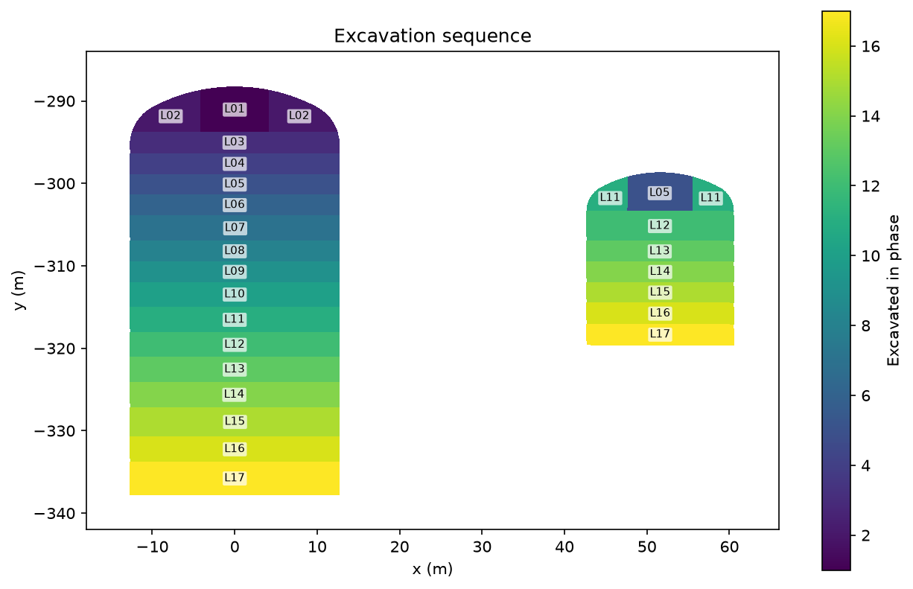

模型物件
模型物件＝PLAXIS 裡可以「在某個階段開或關」的東西。岩體區塊、邊界條件、固定條件都是 StagedUserFeature。這一類記錄它們是什麼、每個階段開或關、用哪個材料、各階段的參數，以及積分點座標。開挖順序就藏在這裡。
每個施工階段挖掉了哪些岩體區塊？積分點的座標在哪裡？
這一類的表
Python 範例都接在 共用開頭 之後執行；下方「執行結果」是實際跑出來的輸出。
StagedUserFeature
模型物件清單：岩體區塊、邊界條件，以及它們對應的網格區塊
模型中每一個「可分階段啟用」的物件。它把 PLAXIS 裡看到的物件（岩體多邊形、邊界條件）對應到 MeshEntity 的網格區塊。
| 欄位 | 型別 | 意思 |
|---|---|---|
| IDPK | INTEGER | 流水號 |
| Name | TEXT NOT NULL | 物件名稱，例如 Soil_1_…（岩體區塊）、GWFlowBaseBC_…（地下水邊界） |
| IdentificationGUID | TEXT NOT NULL | 唯一識別碼 |
| MeshEntityIDFK | INTEGER NOT NULL | 這個物件對應的網格區塊 → MeshEntity |
| StructureTypeIDFK | INTEGER NOT NULL | 物件種類：Soil、Fixity、Viscous Boundary… → StructureType |
這個模型有哪些物件
SELECT t.Description AS 物件種類, COUNT(*) AS 個數, MIN(f.Name) AS 名稱例子
FROM StagedUserFeature f JOIN StructureType t ON t.ID = f.StructureTypeID
GROUP BY t.ID ORDER BY 2 DESC;| 物件種類 | 個數 | 名稱例子 |
|---|---|---|
| External Water Load Boundary | 354 | external_water_boundary_157 |
| Ground Water Flow Boundary | 179 | GWFlowBaseBC_1 |
| Soil | 32 | Soil_1_1 |
| Fixity | 25 | Fixity_547 |
| Viscous Boundary | 4 | ViscousBoundary_0 |
| Soil Model Contour | 1 | Soil Model Contour |
只有岩體（Soil）與各種邊界條件，沒有 Plate、Anchor、Embedded Beam 等結構元素。也就是說，這個 e5 模型沒有用結構元素模擬支撐。
岩體區塊與網格區塊的對應
SELECT f.ID, f.Name, f.MeshEntityID, m.ComponentCount AS 元素數
FROM StagedUserFeature f JOIN MeshEntity m ON m.ID = f.MeshEntityID
WHERE f.StructureTypeID = 1
ORDER BY f.ID LIMIT 8;| ID | Name | MeshEntityID | 元素數 |
|---|---|---|---|
| 1 | Soil_1_Soil_2_Soil_3_Soil_4_Soil_6_1 | 335 | 401 |
| 2 | Soil_1_Soil_2_Soil_3_Soil_4_Soil_8_1 | 336 | 316 |
| 3 | Soil_1_Soil_2_Soil_3_Soil_4_Soil_7_1 | 337 | 318 |
| 4 | Soil_1_Soil_2_Soil_3_Soil_4_Soil_9_1 | 338 | 592 |
| 5 | Soil_1_Soil_2_Soil_3_Soil_4_Soil_10_1 | 339 | 514 |
| 6 | Soil_1_Soil_2_Soil_3_Soil_4_Soil_11_1 | 340 | 514 |
| 7 | Soil_1_Soil_2_Soil_3_Soil_5_Soil_24_1 | 341 | 264 |
| 8 | Soil_1_Soil_2_Soil_3_Soil_5_Soil_26_1 | 342 | 122 |
StagedUserFeaturePhasesState
每個物件在每個階段開或關、用哪個材料：開挖順序就在這裡
「物件 × 階段」的狀態表：每個物件在每個階段是開是關、用哪個材料。對應 PLAXIS Staged construction 畫面裡把區塊切成灰色（關閉）的操作。
| 欄位 | 型別 | 意思 |
|---|---|---|
| IDPK | INTEGER | 流水號；下一張表用它指回來 |
| IsEnabled | BOOLEAN NOT NULL | 1 = 這個階段啟用；0 = 關閉（岩體區塊就是被挖除） |
| StagedUserFeatureIDFK | INTEGER NOT NULL | 哪個物件 → StagedUserFeature |
| MaterialIDFK | INTEGER NOT NULL | 這個階段用的材料 → Material |
| I_PhaseIDFK | INTEGER NOT NULL | 哪個階段 → I_Phase |
每個階段還剩幾個岩體區塊
SELECT p.Number AS 階段, p.Name AS 名稱,
SUM(s.IsEnabled) AS 啟用的岩體區塊, COUNT(*) - SUM(s.IsEnabled) AS 已挖除
FROM StagedUserFeaturePhasesState s
JOIN StagedUserFeature f ON f.ID = s.StagedUserFeatureID
JOIN I_Phase p ON p.ID = s.I_PhaseID
WHERE f.StructureTypeID = 1 AND p.PhaseTypeID = 1
GROUP BY p.ID ORDER BY p.Number;| 階段 | 名稱 | 啟用的岩體區塊 | 已挖除 |
|---|---|---|---|
| 0 | Ph0_地應力平衡 [InitialPhase] | 32 | 0 |
| 1 | L01_主廠房頂拱中央導坑 [Phase_1] | 31 | 1 |
| 2 | L02_主廠房頂拱兩側擴挖 [Phase_2] | 29 | 3 |
| 3 | L03_主廠房台階至EL906.6 [Phase_3] | 28 | 4 |
| 4 | L04_主廠房台階至EL904.1 [Phase_4] | 27 | 5 |
| 5 | L05_主廠房台階至EL901.6＋主變室頂拱中央導坑 [Phase_5] | 25 | 7 |
| 6 | L06_主廠房台階至EL899.1 [Phase_6] | 24 | 8 |
| 7 | L07_主廠房台階至EL896.0 [Phase_7] | 23 | 9 |
| 8 | L08_主廠房台階至EL893.5 [Phase_8] | 22 | 10 |
| 9 | L09_主廠房台階至EL891.0 [Phase_9] | 21 | 11 |
| 10 | L10_主廠房台階至EL888.0 [Phase_10] | 20 | 12 |
| 11 | L11_主廠房台階至EL884.9＋主變室頂拱兩側擴挖 [Phase_11] | 17 | 15 |
| 12 | L12_主廠房台階至EL881.9＋主變室台階至EL896.0 [Phase_12] | 15 | 17 |
| 13 | L13_主廠房台階至EL878.9＋主變室台階至EL893.5 [Phase_13] | 13 | 19 |
| 14 | L14_主廠房台階至EL875.8＋主變室台階至EL891.0 [Phase_14] | 11 | 21 |
| 15 | L15_主廠房台階至EL872.3＋主變室台階至EL888.5 [Phase_15] | 9 | 23 |
| 16 | L16_主廠房台階至EL869.2＋主變室台階至EL885.9 [Phase_16] | 7 | 25 |
| 17 | L17_主廠房台階至EL865.2＋主變室台階至EL883.4 [Phase_17] | 5 | 27 |
Python：找出開挖順序並畫圖
import matplotlib
matplotlib.use('Agg')
import matplotlib.pyplot as plt
phases = con.execute('SELECT ID, Number FROM I_Phase WHERE PhaseTypeID = 1 ORDER BY Number').fetchall()
removed = {} # 網格區塊 ID → 在第幾階段被挖除
for pid, num in phases:
for (ent,) in con.execute('''SELECT f.MeshEntityID FROM StagedUserFeaturePhasesState s
JOIN StagedUserFeature f ON f.ID = s.StagedUserFeatureID
WHERE s.I_PhaseID = ? AND f.StructureTypeID = 1 AND s.IsEnabled = 0''', (pid,)):
removed.setdefault(ent, num) # 只記第一次被關掉的階段
for num in sorted(set(removed.values())):
print(f'L{num:02d} 挖除的網格區塊：', sorted(e for e, n in removed.items() if n == num))
xy = node_xy()
tris, vals = [], []
for e, num in removed.items():
t = connectivity(e)[:, :3] - 1
tris.append(t)
vals.append(np.full(len(t), num))
tris, vals = np.vstack(tris), np.concatenate(vals)
fig, ax = plt.subplots(figsize=(10, 6.5))
tc = ax.tripcolor(xy[:, 0], xy[:, 1], tris, facecolors=vals, cmap='viridis', vmin=1, vmax=17)
for e, num in removed.items():
c = xy[connectivity(e)[:, :3] - 1].reshape(-1, 2).mean(axis=0)
ax.text(c[0], c[1], f'L{num:02d}', ha='center', va='center', fontsize=7,
bbox=dict(boxstyle='round,pad=0.15', fc='white', ec='none', alpha=0.7))
fig.colorbar(tc, ax=ax, label='Excavated in phase')
ax.set_xlim(-18, 66); ax.set_ylim(-342, -284) # 只看洞室範圍
ax.set_aspect('equal'); ax.set_xlabel('x (m)'); ax.set_ylabel('y (m)')
ax.set_title('Excavation sequence')
fig.savefig('excavation.png', dpi=150, bbox_inches='tight')L01 挖除的網格區塊： [335]
L02 挖除的網格區塊： [336, 337]
L03 挖除的網格區塊： [338]
L04 挖除的網格區塊： [339]
L05 挖除的網格區塊： [340, 341]
L06 挖除的網格區塊： [344]
L07 挖除的網格區塊： [346]
L08 挖除的網格區塊： [347]
L09 挖除的網格區塊： [350]
L10 挖除的網格區塊： [356]
L11 挖除的網格區塊： [342, 343, 358]
L12 挖除的網格區塊： [345, 361]
L13 挖除的網格區塊： [348, 362]
L14 挖除的網格區塊： [351, 363]
L15 挖除的網格區塊： [355, 364]
L16 挖除的網格區塊： [357, 365]
L17 挖除的網格區塊： [359, 366]
StagedUserFeaturePhaseParameterData
物件在各階段的參數：水壓條件、水頭、應力釋放…
物件在某個階段的參數：水壓條件、水頭、應力釋放（Deconfinement）、是否套用強度折減…。它不直接記錄階段，而是透過 StagedUserFeaturePhasesStateID 指到「物件 × 階段」那一列。
| 欄位 | 型別 | 意思 |
|---|---|---|
| IDPK | INTEGER | 流水號 |
| ComponentSize | INTEGER NOT NULL | 分量數 |
| CreatorIDFK | INTEGER NOT NULL | 由哪個程式寫入 → Creator |
| StagedUserFeaturePhasesStateIDFK | INTEGER NOT NULL | 哪個「物件 × 階段」 → StagedUserFeaturePhasesState |
| StagedUserFeatureParameterIDFK | INTEGER NOT NULL | 哪個參數 → StagedUserFeatureParameter |
| DataLayoutIDFK | INTEGER | 數值排在哪裡（可為 NULL） → DataLayout |
| DataInterpretationIDFK | INTEGER | 數值格式；StagedUserFeatureParameterTableId 表示值是 StagedUserFeatureParameter 的 ID → DataInterpretation |
| ParentParameterDataIDFK | INTEGER | 指向同表另一列，用來分組 → StagedUserFeaturePhaseParameterData |
| DataBLOB | BLOB | 參數值（二進位） |
Python：讀區塊 336 在 L01 的參數
ent = 336
pid = con.execute('SELECT ID FROM I_Phase WHERE Number = 1 AND PhaseTypeID = 1').fetchone()[0]
names = dict(con.execute('SELECT ID, Description FROM StagedUserFeatureParameter'))
rows = con.execute('''SELECT d.StagedUserFeatureParameterID, d.DataInterpretationID, d.ComponentSize, d.Data
FROM StagedUserFeaturePhaseParameterData d
JOIN StagedUserFeaturePhasesState s ON s.ID = d.StagedUserFeaturePhasesStateID
JOIN StagedUserFeature f ON f.ID = s.StagedUserFeatureID
WHERE f.MeshEntityID = ? AND s.I_PhaseID = ?''', (ent, pid)).fetchall()
for ppid, di, cs, data in rows:
v = decode(data, di, cs)
if v is None:
shown = '（群組，無值）'
elif di == 16: # StagedUserFeatureParameterTableId → 選項名稱
shown = names[int(v.ravel()[0])]
elif v.size > 6:
shown = f'{v.size} 個值，例如 {np.round(v.ravel()[:3], 2).tolist()}'
else:
shown = np.round(v.ravel(), 4).tolist()
print(f'{names[ppid]:28s} {shown}')Volumetric Strain [0.0, 0.0, 0.0]
Use Global Field Stress [1]
Field Stress [0.0, 0.0, 0.0]
Field Stress Axes 9 個值，例如 [0.0, 1.0, 0.0]
Apply Strength Reduction [0]
HeatFluxFunction [-1]
HeatFlux Function Signal Constant Signal
Head 4740 個值，例如 [-647.8, -647.8, -647.8]
Head 3792 個值，例如 [-647.8, -647.8, -647.8]
Has Preconsolidation [1]
Water Condition Global Water Level
Pore Pressure 4740 個值，例如 [3540.0, 3540.0, 3545.19]
Pore Pressure 3792 個值，例如 [3544.54, 3540.33, 3540.33]
Temperature Condition Type Inactive Condition
Energy Condition Type Inactive Condition
Deconfinement [-1.0]Head = −647.8 m 就是 Result 提到的地下水位設定；Deconfinement = −1 表示沒有使用應力釋放（β 法）。
StagedUserFeatureGlobalParameterData
不分階段的物件參數；本檔是岩體區塊的積分點座標（StressPoints）
和上一張表一樣存物件參數，但不分階段。本檔 64 列全部是 32 個岩體區塊的 StressPoints（應力點，即積分點），每個區塊兩列：
- ComponentSize 2：每個積分點的 (x, y)，共「元素數 × 12」點，順序和 Result 裡 Integration Point 的資料一致。
- ComponentSize 1：每個元素一個值，數值等於元素面積的 2 倍（即三角形座標轉換的 Jacobian 行列式）。
| 欄位 | 型別 | 意思 |
|---|---|---|
| IDPK | INTEGER | 流水號 |
| ComponentSize | INTEGER NOT NULL | 分量數：座標為 2（x, y），元素值為 1 |
| CreatorIDFK | INTEGER NOT NULL | 由哪個程式寫入 → Creator |
| StagedUserFeatureIDFK | INTEGER NOT NULL | 哪個物件 → StagedUserFeature |
| StagedUserFeatureParameterIDFK | INTEGER NOT NULL | 哪個參數；本檔全部是 StressPoints → StagedUserFeatureParameter |
| DataLayoutIDFK | INTEGER | 數值排在哪裡 → DataLayout |
| DataInterpretationIDFK | INTEGER | 數值格式 → DataInterpretation |
| ParentParameterDataIDFK | INTEGER | 分組用 → StagedUserFeatureGlobalParameterData |
| DataBLOB | BLOB | 數值（二進位） |
Python：取出積分點座標並驗證
ent = 336
suf = con.execute('SELECT ID FROM StagedUserFeature WHERE MeshEntityID = ?', (ent,)).fetchone()[0]
rows = con.execute('''SELECT ComponentSize, DataLayoutID, DataInterpretationID, Data
FROM StagedUserFeatureGlobalParameterData WHERE StagedUserFeatureID = ?''', (suf,)).fetchall()
arr = {cs: decode(data, di, cs) for cs, dl, di, data in rows}
pts, w = arr[2], arr[1]
conn = connectivity(ent)
print('元素', len(conn), '個；積分點座標', pts.shape, '；每元素值', w.shape)
# 每元素值 ÷ 元素面積
xy = node_xy()
a, b, c = (xy[conn[:, i] - 1] for i in range(3))
area = 0.5 * np.abs((b[:, 0] - a[:, 0]) * (c[:, 1] - a[:, 1]) - (c[:, 0] - a[:, 0]) * (b[:, 1] - a[:, 1]))
print('每元素值 / 元素面積：最小', (w / area).min().round(6), '最大', (w / area).max().round(6))
# 第 1 個元素的 12 個積分點都落在第 1 個元素裡（用重心座標檢查）
T = np.array([[a[0, 0] - c[0, 0], b[0, 0] - c[0, 0]], [a[0, 1] - c[0, 1], b[0, 1] - c[0, 1]]])
lam = np.linalg.solve(T, (pts[:12] - c[0]).T)
print('第 1 個元素的 12 個積分點都在元素內：', bool(np.all(lam > 0) and np.all(lam.sum(0) < 1)))元素 316 個；積分點座標 (3792, 2) ；每元素值 (316,)
每元素值 / 元素面積：最小 2.0 最大 2.0
第 1 個元素的 12 個積分點都在元素內： True想把應力畫成雲圖或沿某條線取值，就需要積分點座標。搭配方式見 Result 的「讀積分點應力」範例。
StagedUserFeatureRelation
物件之間的關係（剛體從屬）；本檔為空
物件之間在某個階段的關係，例如把一群物件設成剛體（Rigid body）時，記錄「誰是誰的從屬」。這個模型沒有使用剛體，所以是空表。其他有剛體的專案才會有資料。
| 欄位 | 型別 | 意思 |
|---|---|---|
| IDPK | INTEGER | 流水號 |
| I_PhaseIDFK | INTEGER NOT NULL | 哪個階段 → I_Phase |
| SourceStagedUserFeatureIDFK | INTEGER NOT NULL | 來源物件 → StagedUserFeature |
| TargetStagedUserFeatureIDFK | INTEGER NOT NULL | 目標物件 → StagedUserFeature |
| StagedUserFeatureRelationTypeIDFK | INTEGER NOT NULL | 關係種類；只有 Rigid Slave Of（剛體從屬） → StagedUserFeatureRelationType |
SELECT COUNT(*) AS 筆數 FROM StagedUserFeatureRelation;| 筆數 |
|---|
| 0 |